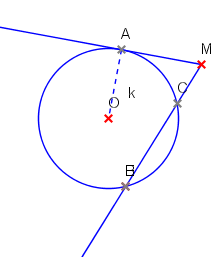
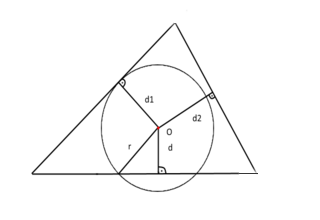
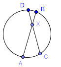

Описание
Определение на Евклид
Според математическият трактат "елементите" на Евклид, кръгът представлява равнинна фигура, която е ограничена от линия, така че всички прави отсечки, достигащти до нея от една от точките, лежащи вътре във фигурата, са равни една на друга.
Определение Аполоний от Перге
Аполоний от Перге доказва, че окръжността може да бъде дефинирана по следния начин: Множество от точки в дадена равнина, за които съотношението на разстоянието до двe зададени точки е константа, различна от единица.
Термини свързани с окръжности

|
 |
| фигура 1. | фигура 2. |
- Център на окръжност: Множество от точки, които се намират на равно разтояние от дадена точка. Бележим с точка О. Вижте фигура 2., центер.
- Радиус: Разтоянието между центъра на окръжността до някоя от точките от окръжноста. Бележи се с r. Вижте фигура 1.
- Диаметър: Най-голямото разтояние между две точки от окръжността. Бележи се с d=2*r. Вижте фигура 1.
- Сектор: Част от кръг, ограничена от дъга и два радиуса, които съединяват краищата на дъгата с центъра на кръга. Вижте фигура 1.
- Хорда: Отсечка, съединяваща две точки от окръжност.отсечката BC e хорда. Вижте фигура 2.
- Дъга: Крива, която е част от окръжността. Вижте фигура 2., дъгата BC.
- Сегмент: Част от кръг, ограничена от дъга и прилежащата ѝ хорда.
- Допирателна: Права, имаща само една обща точка с окръжност. Вижте фигура 2., точка А.
- Централен ъгъл: Ъгъл, чийто връх съвпада с центъра О на дадена окръжност, а рамената му пресичат окръжността в една точка.
- Вписан ъгъл: Ъгъл, върхът на който лежи на окръжност, а раменете му я пресичат.
- Ъглополовяща: Права, която разделя ъгъла на две равни части.
- Симетрала: Права, препедикулярна на отсечката и минаваща през нейната среда.
Свойства
- Права и окръжност може да нямат общи точки, да имат една обща точка – правата е допирателна, и да имат две общи точки – правата е секуща.
- През три точки, нележащи на една права, може да се прекара само една окръжност.
- Допирната точка на две окръжности лежи на правата, съединяваща техните центрове.
Теореми
|  |
| фигура 3. |
T1: Ako d < r, правата t е секуща на окръжността к . Вижте фигура 3.
T2: Ako d1=r , правата t е допирателна на окръжността к. Вижте фигура 3.
T3: Ako d2 > r, правата t и окръжността нямат общи точки .Вижте фигура 3.
Формули
|  |
| фигура 6. |
Пресичащи се хорди (фигура 6.) : AX * XB = CX * XD
Обиколка: P=π*d=2*π*r
Лице на окръжност: S=π.r2